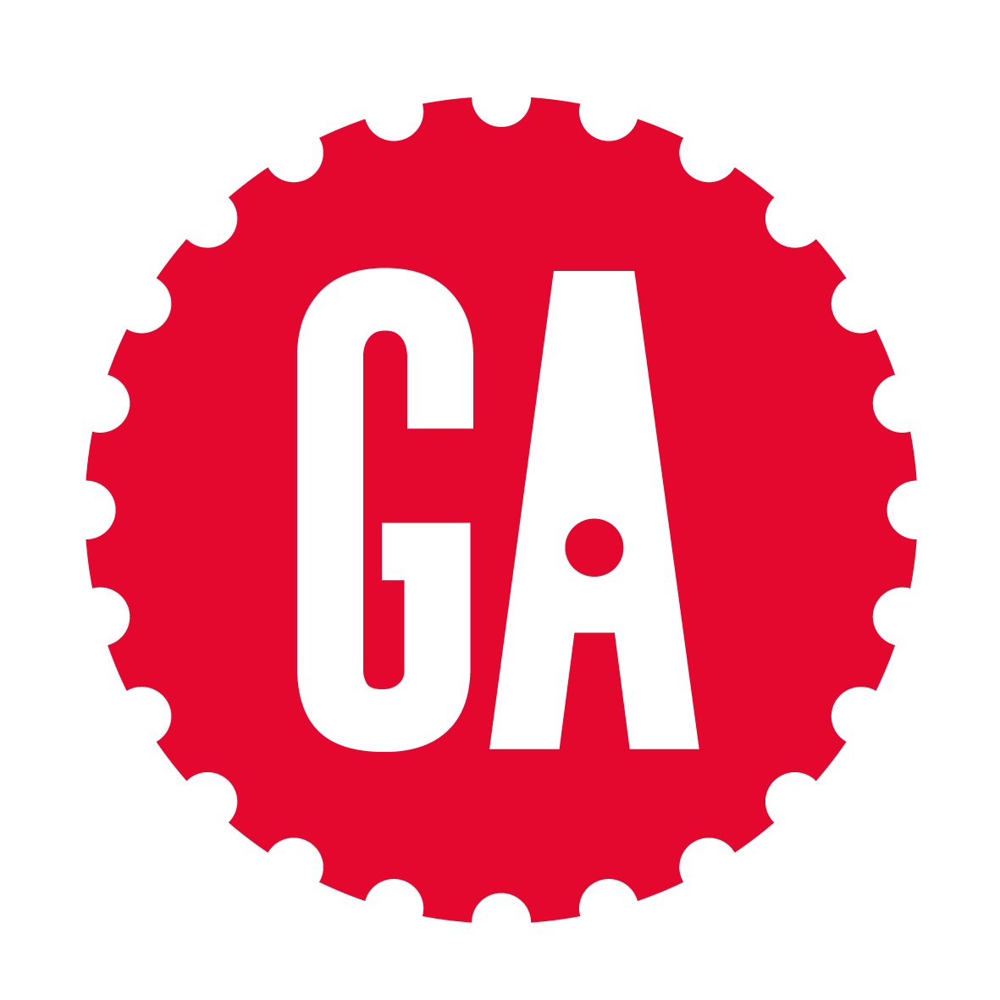
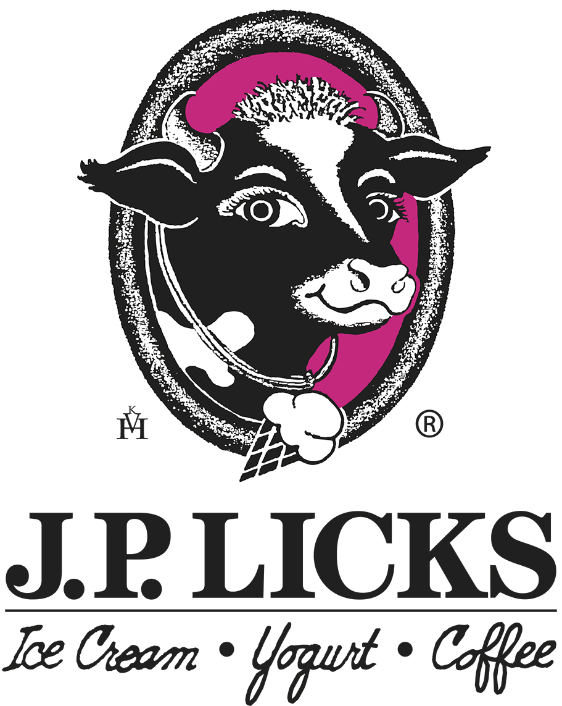

Hello World
I am an experienced digital media specialist and account manager based
in New York City. I am interested in web development, brand, and urban agriculture technologies.
Connect with me on
LinkedIn.
-
I am currently working as an Account Manager at Zero-In Digital Signage in the Flatiron district in Manhattan. I manage 73 accounts ranging from small local banks to national restaurant chains like Melt Shop, The Little Beet and Juice Press. My favorite thing about my work is building relationships with my clients and seeing firsthand how our solutions impact their business.
-
This spring I completed the Front End Web Development part-time class at General Assembly. In this course I built my own responsive and interactive website using HTML, CSS, and JavaScript.
 -

In the past, I worked as the Marketing Coordinator for J.P. Licks Homemade Ice Cream and Coffee Café. In this role, I was responding to customer emails, managing events and donations and running all social media accounts. Follow J.P. Licks on Instagram, Twitter, and Facebook. My favorite flavor of ice cream is Brownie Batter.